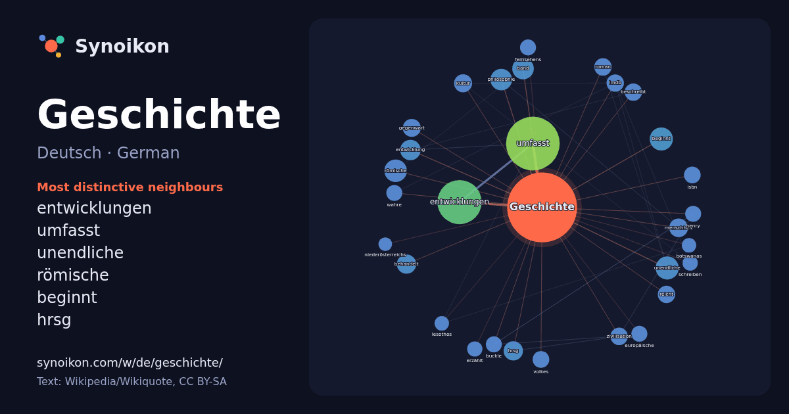

Deutsch · German · popular word
Geschichte
“history” · The words found around it in 1276 instances from German Wikipedia, Wikiquote.

Most distinctive neighbours
- entwicklungen 78×
- umfasst 78×
- unendliche 24×
- römische 20×
- beginnt 17×
- hrsg 17×
- philosophie 15×
- menschheit 15×
- behandelt 14×
- imdb 14×
- zivilisation 14×
- gegenwart 13×
- isbn 13×
- buckle 12×
- fernsehens 12×
- reicht 12×
- wahre 11×
- beschreibt 11×
- volkes 10×
- kultur 10×
× = how many times more often than in general German Wikipedia text.
Most frequent neighbours
- umfasst 124
- entwicklungen 84
- stadt 26
- beginnt 23
- unendliche 23
- römische 22
- band 20
- philosophie 20
- entwicklung 18
- deutschland 17
- lebens 17
- behandelt 16
- deutschen 16
- hrsg 16
- jahrhunderts 16
- menschheit 15
- begann 14
- gegenwart 14
- kultur 14
- beschreibt 13
In context
- nennt man Historiker. Schließlich bezeichnet man mit Geschichte auch das Schulfach Geschichte, das über den Ablauf der Vergangenheit informiert und einen Wikipedia snippets · Geschichte
- dass einer der beiden Podcaster dem jeweils anderen eine „Geschichte aus der Geschichte“ erzählt, die dem Anderen vorher nicht bekannt ist. Hierfür Wikipedia snippets · Geschichten aus der Geschichte (Podcast)
- Geschichte machen (engl.: „Making History“) ist ein Roman des britischen Autors Stephen Fry aus dem Jahr 1996. Der englische Student Michael Young ist Wikipedia snippets · Geschichte machen
- Forschungen zur brandenburg-preußischen Geschichte. Band 7). Böhlau, Köln/Wien 1987, ISBN 3-412-05186-1. Gerd Heinrich: Geschichte Preußens. Staat und Dynastie. Wikipedia snippets · Preußen
- Geschichte Israels bezieht sich auf: Geschichte des Volkes Israel, Geschichte der Israeliten im Altertum Geschichte des Staates Israel seit 1948 Wikipedia snippets · Geschichte Israels
- Die Neuzeit oder Neuere Geschichte ist einem gängigen Periodisierungsschema zufolge nach Altertum und Mittelalter die dritte der historischen Großepochen Wikipedia snippets · Neuzeit
- Parfum – Die Geschichte eines Mörders – Sammlung von Bildern Das Parfum – Die Geschichte eines Mörders bei IMDb Das Parfum – Die Geschichte eines Mörders Wikipedia snippets · Das Parfum – Die Geschichte eines Mörders
- dieser Artikel über die Geschichte Irans zu einem großen Teil auch die Geschichte jener Staaten und Regionen sowie die Geschichte des ehemaligen Großpersischen Wikipedia snippets · Geschichte Irans
More German words
Precomputed on 2026-10-09 with default settings (±5 words, medium corpus). The interactive map can refresh it with live data.